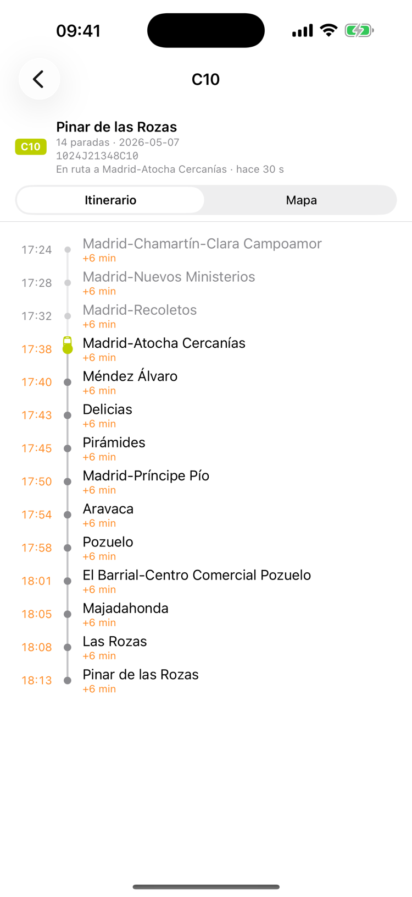
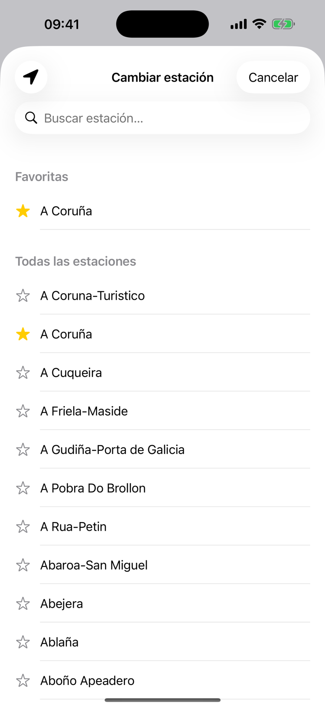
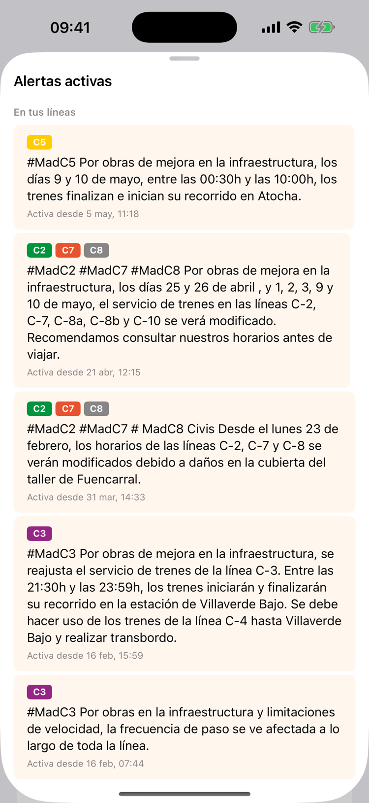

Próxima Parada
When your train arrives, where it is on the map, and which platform it leaves from — without opening five apps. An unofficial companion for Renfe trains, on iPhone, Apple Watch and Mac.



Why it exists
Renfe publishes the data — departures, platform assignments, live vehicle positions and service alerts all flow through public GTFS-RT feeds. What's missing is a way to see the four things a commuter actually needs at once. The official channels spread them across separate screens and notices, so answering "which platform, and how late" turns into several apps and a bit of guesswork.
Próxima Parada answers that in one screen, with no ads and nothing else competing for attention.
What it does
- Live departures from your station, in real time.
- The train on a map, actually positioned — not just labelled "en route".
- The exact platform, as soon as Renfe assigns it.
- Delays to the minute, straight from the official GTFS-RT feed.
- The full itinerary, every stop with its estimated time.
- Active incidents on your lines, surfaced rather than buried.
Three things it does that the official apps don't:
- An "on platform" alert the moment your train is sitting there waiting.
- A compensation warning when your delay crosses Renfe's official refund threshold, for Avant, AVE, Larga Distancia and Media Distancia — money most passengers never claim because nobody tells them they qualify.
- A plain-language planner: "trains tomorrow at 15:00, Atocha to Toledo".
Privacy
No account, no registration, and no analytics or telemetry of any kind. Location is read only in the moment you ask for the nearest station. A commuting app knows where you are every morning and evening; the only way not to be trusted with that is not to collect it.
Details
- Platform
- iOS 18 or later — iPhone, Apple Watch, and Mac menu bar, with home and lock screen widgets
- Coverage
- All Renfe Cercanías networks (Madrid, Barcelona, Bilbao, Valencia, Asturias, Cantabria, San Sebastián, Sevilla, Cádiz, Málaga, Murcia, Zaragoza), Cercanías Avant, AVE, and Larga Distancia (Alvia, Intercity)
- Data
- Renfe Operadora's public GTFS-RT feeds
- Price
- Free
- Released
- May 2026
- Language
- Spanish